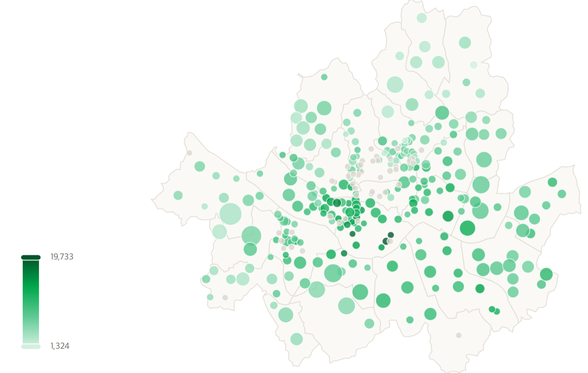

2022년엔 전세가 앞섰는데 2년 만에 월세가 따라잡았습니다.
한쪽이 압도적이면 고민할 일도 없습니다. 둘이 같다는 건 지금 이 순간 가장 많은 청년이 실제로 저울질하고 있다는 뜻입니다.
등기부 한 장에서 주소·전용면적·용도·채권최고액·권리 제한이 함께 나옵니다. 이 다섯 개가 시세 추정과 위험 계산 양쪽의 입력이 됩니다.
| 출력 | 답하는 질문 |
|---|---|
| 혜택 매칭 + 미자격 반증 | 나에게 적용되는 상품은? 안 되면 어느 조항에서 얼마 초과? 차선은? |
| 위험 측정 | 이 매물에 적힌 권리 제한은? 보증금 미회수 기대손실은 얼마? |
| 비용 간격 | 정책을 적용한 뒤, 전세와 월세의 실질 연비용 차이는 얼마? |
risk_model_2026-08)
| 항목 | 전세 | 월세 |
|---|---|---|
| 정책대출이자 (1.2%) | 120만원 | — |
| 시장대출이자 (3.49%) | 279만원 | — |
| 보증금 기회비용 (4.0%) | 80만원 | 80만원 |
| 미회수 기대손실 | 442만원 | — |
| 연월세 | — | 660만원 |
| 월세 세액공제 | — | −112만원 |
| 청년월세 특별지원 | — | −120만원 |
| 합계 | 921만원 | 508만원 |
math.exp 한 줄| 합성 픽스처가 놓친 것 | 실물에서 드러난 결과 |
|---|---|
| '주요 등기사항 요약' 절 가짜 등기부엔 이 절이 없었다 |
발급본이 을구의 유효 근저당을 되풀이해서 채권최고액이 2배가 됐고, LGD가 1.0에 고정됐습니다. 테스트 12개가 통과하는 내내 살아 있던 결함입니다 |
| 집합건물의 전용면적 위치 실물은 '전용면적'이라는 낱말을 찍지 않는다 |
같은 문서의 다른 ㎡가 4개(전유부분·층별·대지면적·대지권비율). 절을 구분하지 않으면 대지면적을 집어 정답의 9.8배 → 시세 과대 → 기대손실 과소평가 |
| 표 옆 칸이 같은 줄에 섞임 | 도로명주소가 3건 중 3건 틀렸습니다('공릉로 1층 45.29㎡'의 1을 번지로 집음). 주소 모양 토큰만 골라 잇도록 교체했습니다 |
| 현재 | 실물 발급본 3건(건물 2 · 집합건물 1)에 테스트 31개를 걸어 주소·전용면적·채권최고액·용도·층·호수·말소 처리를 사람이 원문과 대조한 정답으로 고정합니다 |
risk_model_2026-08)으로 빼서 stdlib만으로 계산합니다.
컨테이너 런타임에 numpy·pandas·sklearn이 없어서 학습 라이브러리를 추론 경로에 두지 않았습니다l3/risk.py). 등기부에 적힌 권리 제한 등급은
다른 축(l3/register_risk.py)이라 분리했습니다 — 권리 제한이 없어도(🟢) 전세가율이 높으면 기대손실은 큽니다.
섞으면 위험의 두 번째 정의가 생기고, 두 숫자가 갈라지는 순간 어느 쪽도 못 믿게 됩니다.
tax_rules_2026-07.json처럼 YYYY-MM을 파일명에 답니다. "2026년 ○월 기준" 명기가 필수입니다clause_refs · url · note가 붙어 화면 인용으로 그대로 나갑니다judgment: true와 오차 방향을 함께 적습니다. 어느 쪽으로 틀릴 수 있는지 모르면 밴드를 넓게 둡니다| 데이터 | 출처 | 수집 | 주기 |
|---|---|---|---|
| 시세(실거래가) | 국토교통부 실거래가 API (공공데이터포털) | REST API | 온디맨드 |
| 낙찰가율 | 법원경매정보 지역·유형별 통계 | 공개 API 없음 → 통계표 수동 수집 | 월 1회 |
| 세제·정책상품 | 국가법령정보센터(조문·별표) · 기금e든든 · 주택도시기금 | API 수신 후 사람 검수 | 공고 변경 시 |
| 등기부등본 | 인터넷등기소 (열람 700원/건, 실시간 API 부재) | 사용자 업로드 | 요청 시 |
| P(사고) 계수 | 한국부동산원 부동산테크 임대차 시장정보 | 시군구 집계표 → 마진 보정 | 통계 갱신 시 |
| 금리 | 주택금융공사 공개 API · 금융감독원 Finlife 공시금리 | API 2종 교차검증 | 공시 갱신 시 |

READONLY 모드로 캐시만 읽습니다. 1요청이 국토부 API를 최대 183회 호출해서, 공개 경로가 키 쿼터를 소진시킬 수 있습니다| 기능 | 공공포털 | 안심전세앱 | 프롭테크 | 핀테크 | 온전 |
|---|---|---|---|---|---|
| 정책 목록·자격 진단 | 있음 | — | — | 부분 | 있음 |
| 등기부 분석·위험 정보 | — | 있음 | 있음 | — | 있음 |
| 대출 비교·실행 | — | — | — | 있음 | 있음 |
| 미자격 반증 + 조항 인용 | — | — | — | — | 있음 |
| 리스크 ₩ 정량화 | — | — | — | — | 있음 |
| 전세 대 월세 세후 비교 | — | — | — | — | 있음 |
| 법률 자문이 아니라 정보 제공입니다 | 그래서 판정을 결정론화하고 모든 출력에 원문을 인용합니다 |
| 등기부 밖 위험은 못 봅니다 | 임대인 국세 체납, 미신고 선순위 임차인. 구조적으로 불가능해서 보증보험 가입 유도로 보완합니다 |
| 사고확률 계수가 거칩니다 | 시군구 집계로 개별 매물을 추정하니 생태학적 오류의 위험이 있습니다. 그래서 점추정 대신 밴드를 냅니다 |
| 시세는 지역 평균 추정치 | 특정 호실의 시세가 아니고, 집계 단위(지번·동·시군구)에 따라 불확실성 폭도 달라집니다 |
| 현재 범위는 서울 25개 구 · 상품 7종 | 실거래 캐시와 최우선변제 기준이 서울만 있어서, 그 밖은 계산을 막습니다 |
| 다중주택은 방 면적을 사용자가 넣습니다 | 등기부에 방 면적이 없는데 그 값이 결론을 바꿉니다 — 같은 문서가 방 20㎡ 기준 기대손실 6,831만원, 건물 연면적 기준 0원입니다. 지금은 보수적인 쪽을 쓰고 경고를 붙입니다 |
청년은 인생에서 가장 큰 금융 결정을 가장 적은 정보로 내립니다.
온전은 그 결정을 대신하지 않습니다. 계산해서 보여줄 뿐입니다.